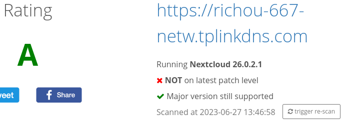

To synchronize and back up my files, I have set up a Nextcloud server. This way, I keep control of my data and privacy.
My goal is to make it accessible on the internet, so it is necessary to secure it. That's why I opted for the preconfigured version on the Snapcraft store, which is secure by default (provided you use a strong password).
I have not opened port 22 (secure remote access) to prevent remote brute force attacks. Instead, I have activated the OpenVPN server function on my TpLink router, allowing me to have secure full access remotely.
Currently, I'm not sure if I will keep this server indefinitely, but it is currently very useful. If I use it less, I will repurpose it into a Home Assistant server (more powerful than the current server for voice command).
To check if the server is secure, you can use the tool provided by Nextcloud. I have done that, and you can see the result below (you can do it too if you want to verify).
